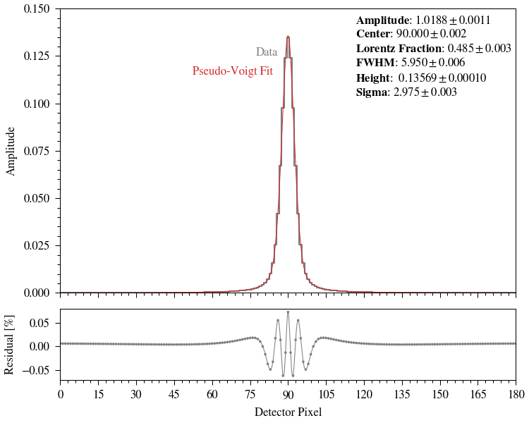

Note
Click here to download the full example code
MUV Pointspread Function#
Plot the MUV pointspread function.
import numpy as np
import matplotlib.pyplot as plt
import matplotlib.ticker as ticker
from lmfit.models import PseudoVoigtModel
from scipy.interpolate import interp1d
import pyuvs as pu
# set plot settings
plt.rc('mathtext', fontset='stix')
plt.rc('font', **{'family': 'STIXGeneral'})
plt.rc('font', size=8)
plt.rc('axes', titlesize=8)
plt.rc('axes', labelsize=8)
plt.rc('xtick', labelsize=8)
plt.rc('ytick', labelsize=8)
plt.rc('legend', fontsize=8)
plt.rc('figure', titlesize=8)
plt.rc('pdf', fonttype=42)
plt.rc('ps', fonttype=42)
plt.rc('lines', linewidth=0.5)
plt.rc('axes', linewidth=0.5)
plt.rc('xtick.major', width=0.5)
plt.rc('xtick.minor', width=0.5)
plt.rc('ytick.major', width=0.5)
plt.rc('ytick.minor', width=0.5)
dpi = 150
plt.rc('savefig', dpi=dpi)
# my custom color dictionary
color_dict = {'red': '#D62728', 'orange': '#FF7F0E', 'yellow': '#FDB813',
'green': '#2CA02C', 'blue': '#0079C1', 'violet': '#9467BD',
'cyan': '#17BECF', 'magenta': '#D64ECF', 'brown': '#8C564B',
'darkgrey': '#3F3F3F', 'grey': '#7F7F7F', 'lightgrey': '#BFBFBF'}
# get point-spread function data
psf = pu.load_muv_point_spread_function()
# set model x and y variables
detector_pixels = np.arange(len(psf))
detector_pixel_edges = np.linspace(0, len(psf)-1, len(psf)+1)
# initialize model
model = PseudoVoigtModel()
# use model's built-in initial parameters guessing option
initial_parameters = model.guess(psf, x=detector_pixels)
# fit the model to the point-spread function data
result = model.fit(psf, initial_parameters, x=detector_pixels)
params = result.params
parnames = sorted(params)
# make a figure and axes
fig, axes = plt.subplots(2, 1, figsize=(5, 4), sharex=True,
gridspec_kw={'height_ratios': [4, 1]},
constrained_layout=True)
# plot the IUVS data
axes[0].step(detector_pixel_edges, np.concatenate((psf, [psf[-1]])), where='post', color=color_dict['grey'], linewidth=1)
# plot the model fit result at 100x resolution
x = np.linspace(detector_pixels[0], detector_pixels[-1], (len(detector_pixels)-1)*100 + 1)
axes[0].plot(x, result.eval(params, x=x), color=color_dict['red'])
# scatterplot the residuals from the model fit and a spline fit to the residuals
axes[1].scatter(detector_pixels, result.residual*100, color=color_dict['grey'], edgecolor='none', s=3)
f = interp1d(detector_pixels, result.residual*100, kind='cubic')
axes[1].plot(x, f(x), color=color_dict['grey'])
# label the plots
axes[0].text(86, 0.125, 'Data', color=color_dict['grey'], ha='right')
axes[0].text(84, 0.115, 'Pseudo-Voigt Fit', color=color_dict['red'], ha='right')
for i in range(len(params)):
ind = parnames[i]
name = ind.capitalize()
if name == 'Fwhm':
name = 'FWHM'
elif name == 'Fraction':
name = 'Lorentz\ Fraction'
if ind == 'height':
txt = r'$\bf{' + name + '}$: ' + f' ${params[ind].value:.5f} \pm {params[ind].stderr:.5f}$'
elif ind == 'amplitude':
txt = r'$\bf{' + name + '}$: ' + f'${params[ind].value:.4f} \pm {params[ind].stderr:.4f}$'
else:
txt = r'$\bf{' + name + '}$: ' + f'${params[ind].value:.3f} \pm {params[ind].stderr:.3f}$'
axes[0].text(0.6475, 0.98-0.05*i, txt, ha='left', va='top', transform=axes[0].transAxes)
# set PSF axis parameters
axes[0].xaxis.set_major_locator(ticker.MultipleLocator(15))
axes[0].xaxis.set_minor_locator(ticker.MultipleLocator(3))
axes[0].set_xlim(detector_pixel_edges[0], detector_pixel_edges[-1])
axes[0].yaxis.set_major_locator(ticker.MultipleLocator(0.025))
axes[0].yaxis.set_minor_locator(ticker.MultipleLocator(0.005))
axes[0].set_ylim(0, 0.15)
axes[0].set_ylabel('Amplitude')
# set residual axis parameters
axes[1].set_xlabel('Detector Pixel')
axes[1].set_ylabel('Residual [%]')
# save the plot
plt.show()
Total running time of the script: ( 0 minutes 0.555 seconds)